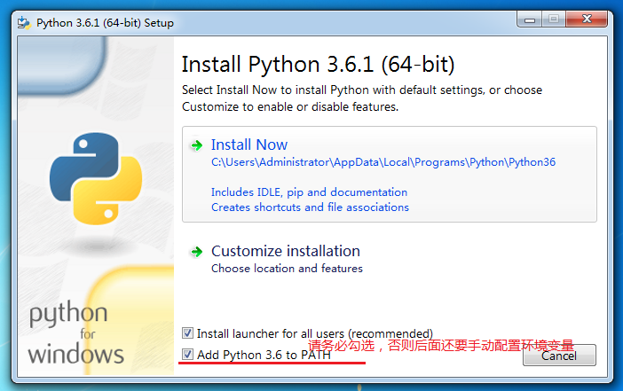
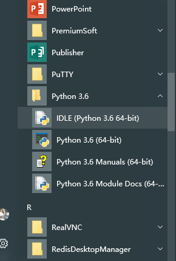
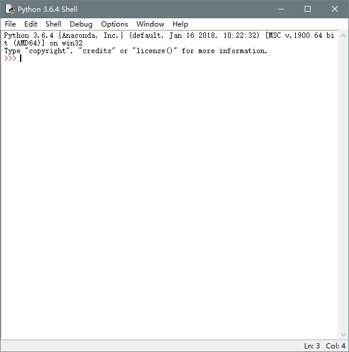
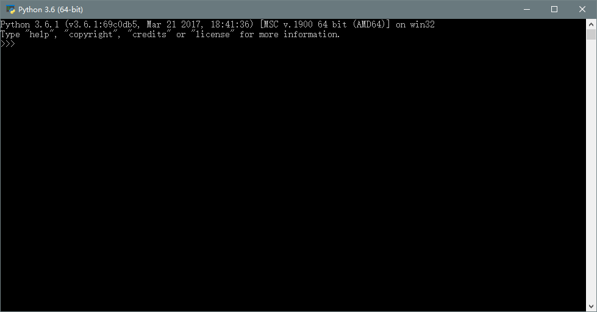
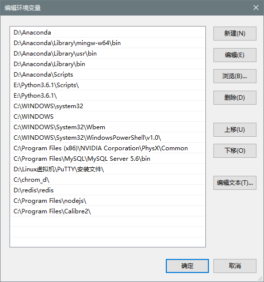

Windows 安装 Python 3
目前Python有两个大版本，分别是 2.X 和 3.X ，截止于2018年10月10日，python最新版本为 3.7.0。 但是由于anaconda等某些功能不兼容3.7.0，所以目前还是使用3.6版本。首先我们需要获取Python的安装包，可以从官网获取，如果你因为没有VPN工具而无法访问官网的话，我已经将它放在网盘了，永久有效。

你可以根据电脑的操作系统来选择相应的版本。

双击安装，请务必将下面的add python 3.6 to path 选中。

安装成功后直接close即可
好了，到这里就已经安装成功啦
你可以通过 开始 -> 所有程序 -> python 3.6 -> IDLE 打开程序自带的命令行工具

程序自带的命令行界面

或者，你也可以通过 win+R 打开运行窗口， 输入 cmd 回车打开命令行界面，然后输入python命令 回车，也可进入python的交互模式

如果你还是忘记了勾选添加环境变量的话，请手动配置环境变量
把安装的Python程序的路径粘贴，复制到我的电脑->属性->高级系统设置->环境变量->Path选项 如果需要，win7分隔符使用英文的分号(;)即可，win10直接新建即可，如下图

Python版本检测
- 方法一：在cmd中直接输入python，第一行会显示python的当前版本
Python 3.6.4 |Anaconda, Inc.| (default, Jan 16 2018, 10:22:32) [MSC v.1900 64 bit (AMD64)] on win32 Type "help", "copyright", "credits" or "license" for more information. >>> - 在命令行界面输入 python -V即可，无需进入交互界面即可查看版本信息。
C:\Users\Administrator>python -V Python 3.6.4 :: Anaconda, Inc. >>> - 在Windows的开始菜单，打开Python的IDLE，也可以查看到版本信息。（IDLE是Python软件包自带的一个集成开发环境，初学者可以利用它方便的创建、运行、测试和调试Python程序）
Python 3.6.1 (v3.6.1:69c0db5, Mar 21 2017, 17:54:52) [MSC v.1900 32 bit (Intel)] on win32 Type "copyright", "credits" or "license()" for more information. >>>